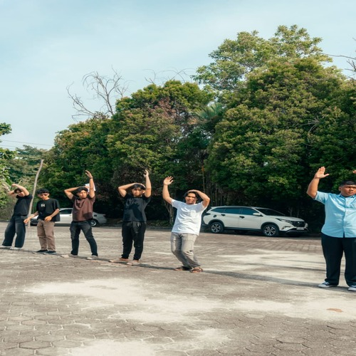
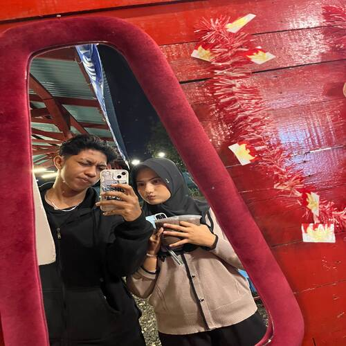
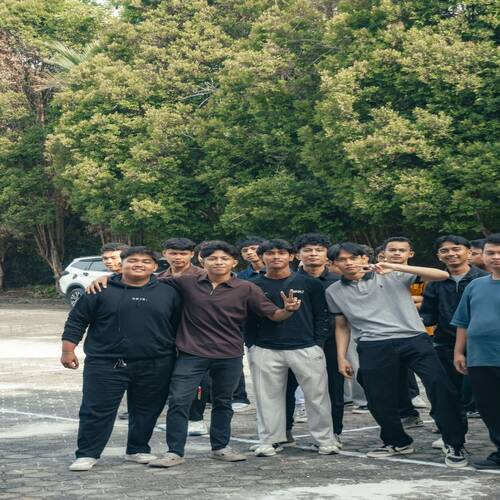
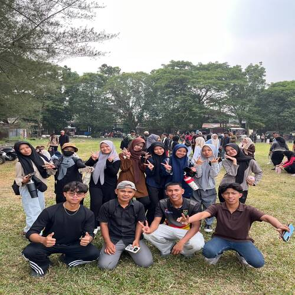

GHAZA'S JOURNAL / GALLERY
Gallery
Bukan sekadar foto. Ini potongan cerita dari kegiatan dan momen berkesan.
Foto alay pas perfotoan panitia Fortasi
Potret dari atas GB
Mendaki di UIN, nih ceritanya
Temu ramah adik-adik 26
PBAK fakultas

Kating sehat, senam pagi

Couple goals, katanya…

Ehh, ketemu fans!

Foto bareng adik-adik kelompok
Klik foto untuk membuka ukuran aslinya di tab baru.